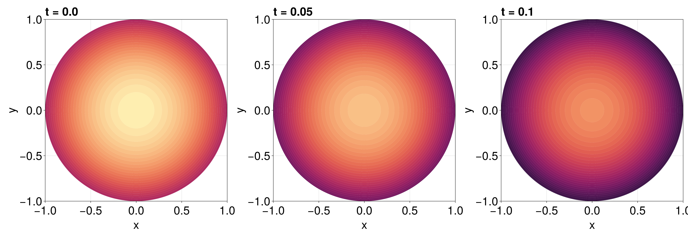

Reaction-Diffusion Equation with a Time-dependent Dirichlet Boundary Condition on a Disk
In this tutorial, we consider a reaction-diffusion equation on a disk with a boundary condition of the form $\mathrm du/\mathrm dt = u$:
\[\begin{equation*} \begin{aligned} \pdv{u(r, \theta, t)}{t} &= \div[u\grad u] + u(1-u) & 0<r<1,\,0<\theta<2\pi,\\[6pt] \dv{u(1, \theta, t)}{t} &= u(1,\theta,t) & 0<\theta<2\pi,\,t>0,\\[6pt] u(r,\theta,0) &= \sqrt{I_0(\sqrt{2}r)} & 0<r<1,\,0<\theta<2\pi, \end{aligned} \end{equation*}\]
where $I_0$ is the modified Bessel function of the first kind of order zero. For this problem the diffusion function is $D(\vb x, t, u) = u$ and the source function is $R(\vb x, t, u) = u(1-u)$, or equivalently the force function is
\[\vb q(\vb x, t, \alpha,\beta,\gamma) = \left(-\alpha(\alpha x + \beta y + \gamma), -\beta(\alpha x + \beta y + \gamma)\right)^{\mkern-1.5mu\mathsf{T}}.\]
As usual, we start by generating the mesh.
using FiniteVolumeMethod, DelaunayTriangulation, ElasticArrays
r = 1.0
circle = CircularArc((0.0, r), (0.0, r), (0.0, 0.0))
points = NTuple{2, Float64}[]
boundary_nodes = [circle]
tri = triangulate(points; boundary_nodes)
A = get_area(tri)
refine!(tri; max_area = 1e-4A)
mesh = FVMGeometry(tri)FVMGeometry with 8928 control volumes, 17598 triangles, and 26525 edgesusing CairoMakie
triplot(tri)Now we define the boundary conditions and the PDE.
using Bessels
BCs = BoundaryConditions(mesh, (x, y, t, u, p) -> u, Dudt)BoundaryConditions with 1 boundary condition with type Dudtf = (x, y) -> sqrt(besseli(0.0, sqrt(2) * sqrt(x^2 + y^2)))
D = (x, y, t, u, p) -> u
R = (x, y, t, u, p) -> u * (1 - u)
initial_condition = [f(x, y) for (x, y) in DelaunayTriangulation.each_point(tri)]
final_time = 0.10
prob = FVMProblem(mesh, BCs;
diffusion_function = D,
source_function = R,
final_time,
initial_condition)FVMProblem with 8928 nodes and time span (0.0, 0.1)We can now solve.
using OrdinaryDiffEq, LinearSolve
alg = FBDF(linsolve = UMFPACKFactorization(), autodiff = AutoFiniteDiff())
sol = solve(prob, alg, saveat = 0.01)retcode: Success
Interpolation: 1st order linear
t: 11-element Vector{Float64}:
0.0
0.01
0.02
0.03
0.04
0.05
0.06
0.07
0.08
0.09
0.1
u: 11-element Vector{Vector{Float64}}:
[1.2514323512504983, 1.2514323512504983, 1.2514323512504983, 1.2514323512504983, 1.2514323512504983, 1.2514323512504983, 1.2514323512504983, 1.2514323512504983, 1.0, 1.0732643239064652 … 1.198850943728113, 1.111978241297819, 1.086951026267742, 1.1593014214583564, 1.1440729723179572, 1.0149534514652303, 1.1637550423883074, 1.1744896590268652, 1.1645911613360873, 1.1682004777832402]
[1.2640096955774, 1.2640096955774, 1.2640096955774, 1.2640096955774, 1.2640096955774, 1.2640096955774, 1.2640096955774, 1.2640096955774, 1.010056267192153, 1.0840382289534403 … 1.2108941904943191, 1.123150498651748, 1.0978783385262139, 1.1709616864635746, 1.1555691913791666, 1.0251600537181769, 1.1754555889139204, 1.1862954865969857, 1.1762988565088652, 1.1799470989072731]
[1.2767142211966773, 1.2767142211966773, 1.2767142211966773, 1.2767142211966773, 1.2767142211966773, 1.2767142211966773, 1.2767142211966773, 1.2767142211966773, 1.0202097884824195, 1.0949349017173886 … 1.2230672202232014, 1.1344407163835792, 1.1089145695503175, 1.182733945137349, 1.1671858503629187, 1.0354661772465859, 1.187273123738102, 1.1982221283357006, 1.1881256342017121, 1.1918102832658977]
[1.2895472654924796, 1.2895472654924796, 1.2895472654924796, 1.2895472654924796, 1.2895472654924796, 1.2895472654924796, 1.2895472654924796, 1.2895472654924796, 1.0304648527275104, 1.1059425789689994 … 1.235362936050718, 1.1458451742901943, 1.1200617064715828, 1.1946233037936977, 1.178919745167224, 1.0458742443980078, 1.1992082759734626, 1.2102674387741699, 1.2000686352784895, 1.2037906991550684]
[1.3025086286047405, 1.3025086286047405, 1.3025086286047405, 1.3025086286047405, 1.3025086286047405, 1.3025086286047405, 1.3025086286047405, 1.3025086286047405, 1.0408215844325246, 1.1170606580673519 … 1.2477791527016404, 1.1573636950091872, 1.1313200664066816, 1.2066298914022635, 1.1907706831554634, 1.0563847061197689, 1.2112609112975687, 1.2224317474026647, 1.212129120892515, 1.2158884853854177]
[1.315600848894754, 1.315600848894754, 1.315600848894754, 1.315600848894754, 1.315600848894754, 1.315600848894754, 1.315600848894754, 1.315600848894754, 1.0512830695996822, 1.1282905864606467 … 1.2603182797901766, 1.1689984062299377, 1.1426925092750155, 1.2187575357581812, 1.2027409386760968, 1.0670017181702363, 1.2234347920572033, 1.2347188149670287, 1.224312205927228, 1.2281081650008847]
[1.3288251092601118, 1.3288251092601118, 1.3288251092601118, 1.3288251092601118, 1.3288251092601118, 1.3288251092601118, 1.3288251092601118, 1.3288251092601118, 1.0618507463318263, 1.1396330386718503 … 1.2729814402166992, 1.180750299473489, 1.154180367822943, 1.2310080206459955, 1.2148315715945293, 1.0777272171675638, 1.2357316715374327, 1.2471303940062775, 1.2366202739610894, 1.2404518457777722]
[1.3421825052445766, 1.3421825052445766, 1.3421825052445766, 1.3421825052445766, 1.3421825052445766, 1.3421825052445766, 1.3421825052445766, 1.3421825052445766, 1.0725259465317452, 1.1510886394122097 … 1.285769673958387, 1.1926202930397052, 1.1657848763770626, 1.2433829981225257, 1.2270435635079333, 1.0885629967158252, 1.2481531735479021, 1.2596681076390994, 1.2490555325516537, 1.2529214798387307]
[1.3556743069599788, 1.3556743069599788, 1.3556743069599788, 1.3556743069599788, 1.3556743069599788, 1.3556743069599788, 1.3556743069599788, 1.3556743069599788, 1.08331021433263, 1.162658112936813 … 1.2986841867062964, 1.2046094515538055, 1.1775074659462192, 1.2558843834895426, 1.239378052424871, 1.099511136218719, 1.2607011806421977, 1.2723338376180229, 1.261620541017005, 1.265519330364981]
[1.3693017845181477, 1.3693017845181477, 1.3693017845181477, 1.3693017845181477, 1.3693017845181477, 1.3693017845181477, 1.3693017845181477, 1.3693017845181477, 1.0942050938676726, 1.1743421835007477 … 1.3117261841514842, 1.2167188396410096, 1.1893495675392582, 1.268514092048816, 1.2518361763539034, 1.1105737150799424, 1.2733775753739054, 1.2851294656955763, 1.2743178586752273, 1.278247660537743]
[1.3830654001013907, 1.3830654001013907, 1.3830654001013907, 1.3830654001013907, 1.3830654001013907, 1.3830654001013907, 1.3830654001013907, 1.3830654001013907, 1.105196779482116, 1.1861602606206922 … 1.324939335779447, 1.2289528442178423, 1.2012964157859223, 1.281256218789809, 1.2644186214151865, 1.121724530599432, 1.2861737828476179, 1.2980335665866503, 1.2870966113988473, 1.2910864861341813]fig = Figure(fontsize = 38)
for (i, j) in zip(1:3, (1, 6, 11))
ax = Axis(fig[1, i], width = 600, height = 600,
xlabel = "x", ylabel = "y",
title = "t = $(sol.t[j])",
titlealign = :left)
tricontourf!(ax, tri, sol.u[j], levels = 1:0.01:1.4, colormap = :matter)
tightlimits!(ax)
end
resize_to_layout!(fig)
fig
Just the code
An uncommented version of this example is given below. You can view the source code for this file here.
using FiniteVolumeMethod, DelaunayTriangulation, ElasticArrays
r = 1.0
circle = CircularArc((0.0, r), (0.0, r), (0.0, 0.0))
points = NTuple{2, Float64}[]
boundary_nodes = [circle]
tri = triangulate(points; boundary_nodes)
A = get_area(tri)
refine!(tri; max_area = 1e-4A)
mesh = FVMGeometry(tri)
using CairoMakie
triplot(tri)
using Bessels
BCs = BoundaryConditions(mesh, (x, y, t, u, p) -> u, Dudt)
f = (x, y) -> sqrt(besseli(0.0, sqrt(2) * sqrt(x^2 + y^2)))
D = (x, y, t, u, p) -> u
R = (x, y, t, u, p) -> u * (1 - u)
initial_condition = [f(x, y) for (x, y) in DelaunayTriangulation.each_point(tri)]
final_time = 0.10
prob = FVMProblem(mesh, BCs;
diffusion_function = D,
source_function = R,
final_time,
initial_condition)
using OrdinaryDiffEq, LinearSolve
alg = FBDF(linsolve = UMFPACKFactorization(), autodiff = AutoFiniteDiff())
sol = solve(prob, alg, saveat = 0.01)
fig = Figure(fontsize = 38)
for (i, j) in zip(1:3, (1, 6, 11))
ax = Axis(fig[1, i], width = 600, height = 600,
xlabel = "x", ylabel = "y",
title = "t = $(sol.t[j])",
titlealign = :left)
tricontourf!(ax, tri, sol.u[j], levels = 1:0.01:1.4, colormap = :matter)
tightlimits!(ax)
end
resize_to_layout!(fig)
figThis page was generated using Literate.jl.